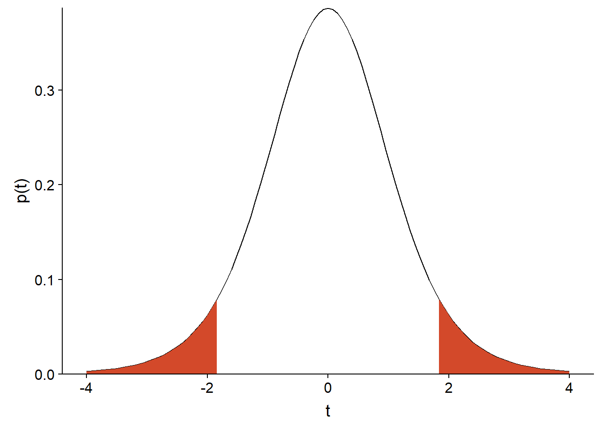
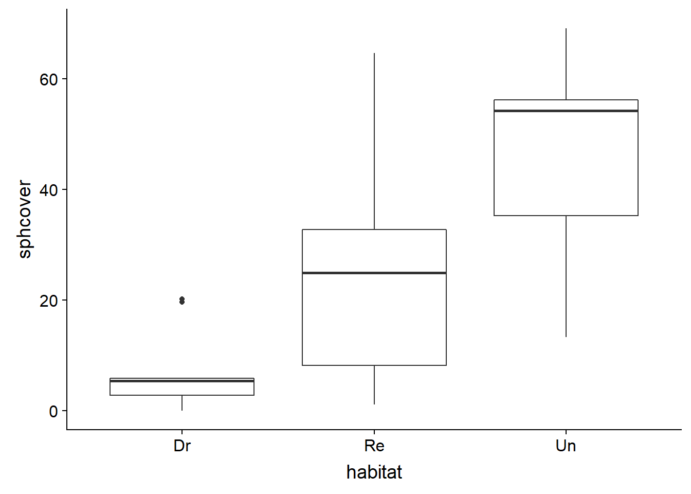
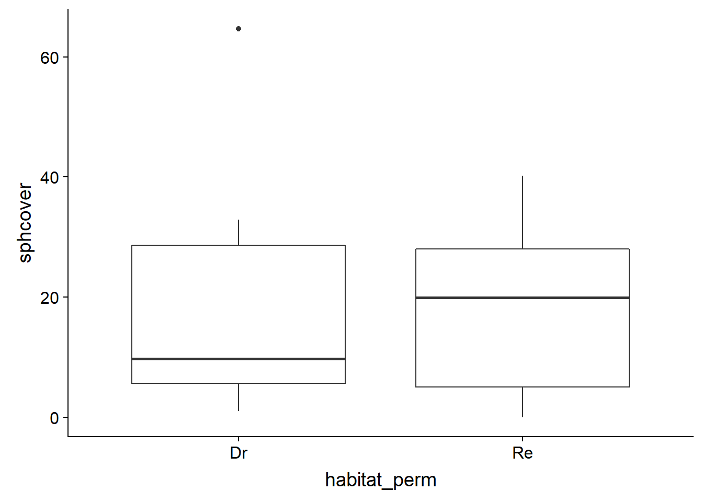
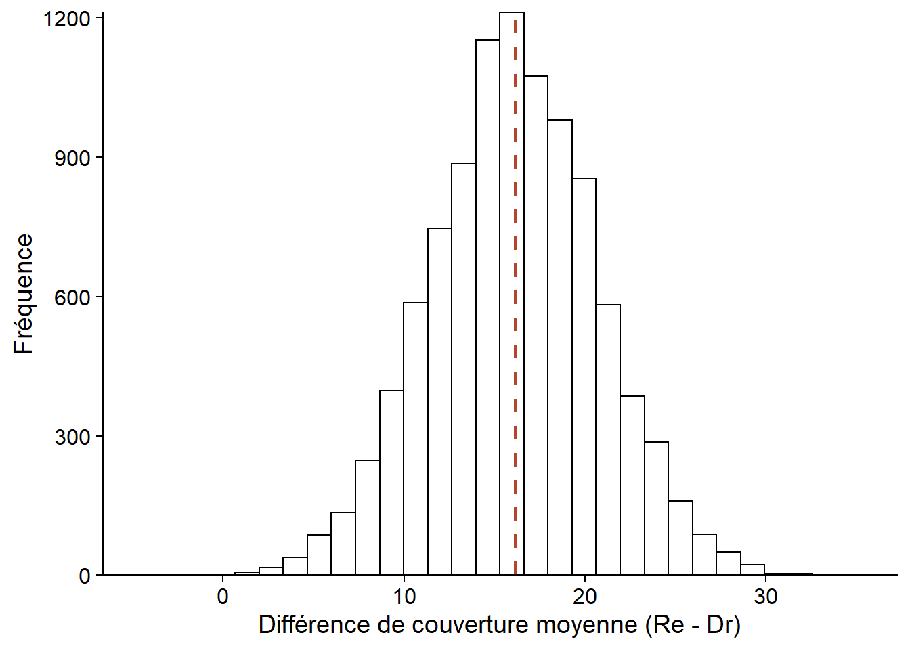
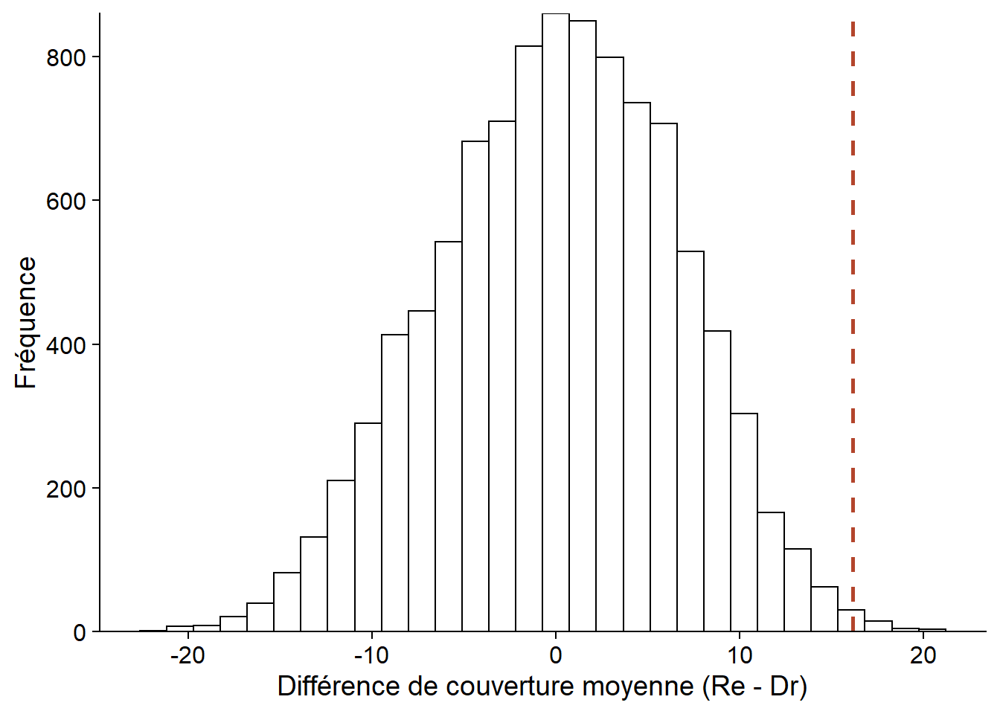
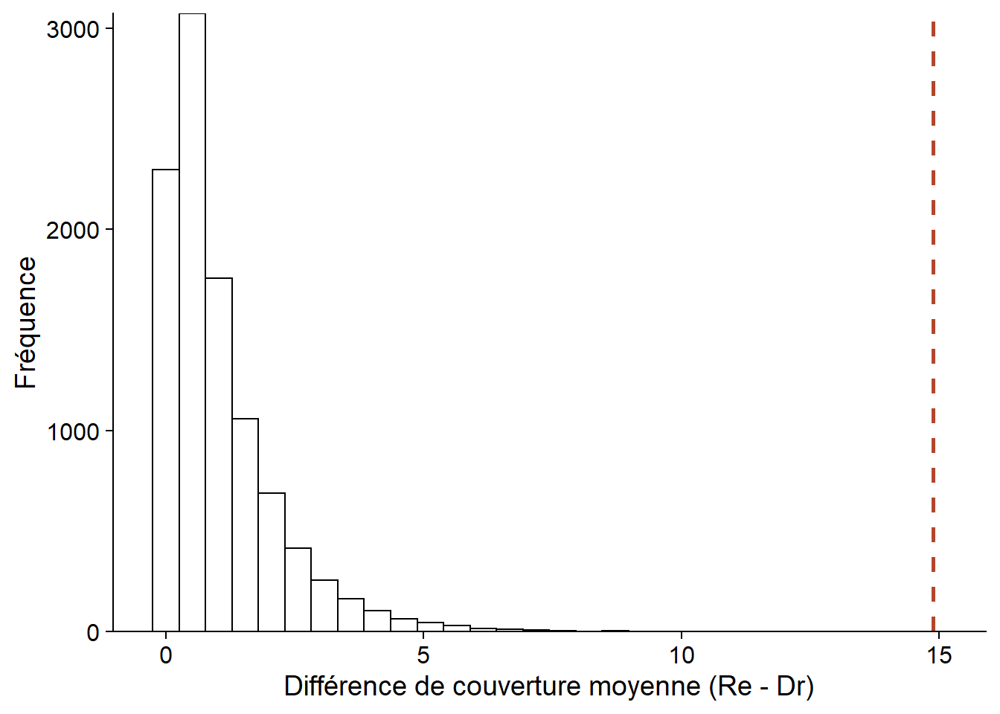
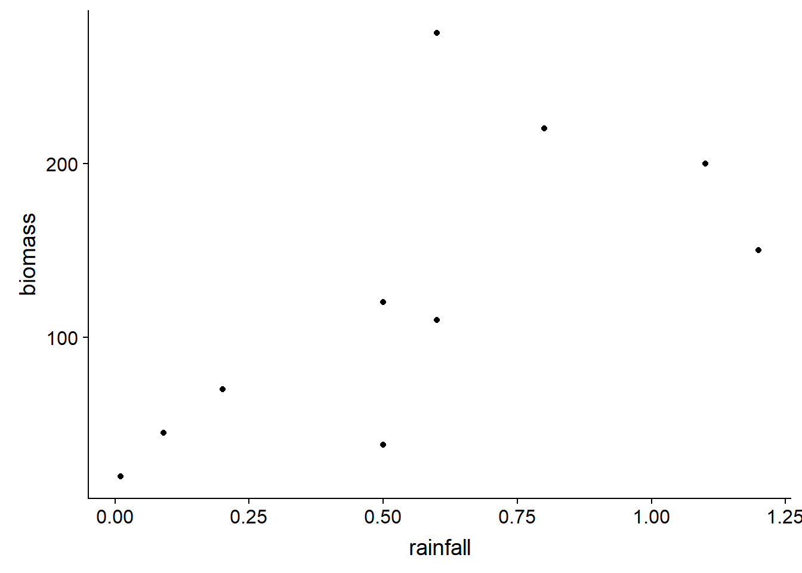

Tests de randomisation
Introduction
Vu au cours précédent, le bootstrap est une méthode visant à déterminer la distribution d’une statistique tirée d’un échantillon, sans devoir supposer de modèle paramétrique pour le processus d’échantillonnage. Cette méthode est basée sur le ré-échantillonnage de l’échantillon observé.
Les tests de randomisation sont une autre méthode non-paramétrique basée sur le ré-échantillonnage. Ces tests visent à approximer la distribution d’une statistique dans le cas où une certaine hypothèse nulle (ex.: indépendance entre deux variables) est vraie.
Contenu du cours
Révision des concepts liés aux tests d’hypothèse
Exemple de test de randomisation
Comparaison entre bootstrap et tests de randomisation
Randomisation pour la régression linéaire simple ou l’ANOVA à un facteur
Régression linéaire multiple et ANOVA à plusieurs facteurs
Tests d’hypothèse
Un test d’hypothèse statistique vise à déterminer si une variation observée dans un échantillon de données est compatible avec un modèle “par défaut” (l’hypothèse nulle), ou si les observations sont si improbables selon cette hypothèse nulle qu’elle doit être rejetée.
Exemple: Moyenne comparée à une valeur de référence
Supposons qu’une théorie nous indique que la moyenne d’une variable \(x\) dans une population serait égale à une valeur de référence \(\mu_0\). Nous échantillonnons \(n\) valeurs de cette variable dans la population; la moyenne de l’échantillon est \(\bar{x}\) et son écart-type est \(s\).
Si nous pouvons supposer que \(\bar{x}\) suit une distribution normale, alors la différence entre \(\bar{x}\) et la moyenne de la population \(\mu\), divisée par l’erreur type de \(\bar{x}\) (soit \(s / \sqrt{n}\)), suit une distribution \(t\) avec \(n - 1\) degrés de liberté.
\[t_{n-1} = \frac{\bar{x} - \mu}{s / \sqrt{n}}\]
Dans ce cas, une fois \(\bar{x}\) et \(s\) calculés, la distribution \(t\) nous indique quelle est la probabilité, si l’hypothèse nulle \(\mu\) = \(\mu_0\) est exacte, d’obtenir une valeur de \(\bar{x}\) aussi loin où plus loin de \(\mu_0\) que celle calculée à partir de cet échantillon.
Par exemple, supposons que \(\mu_0 = 1\), \(n = 9\), \(\bar{x} = 4\) et \(s = 5\). Dans ce cas, \(t = (4 - 1) / (5/3) = 1.8\) si l’hypothèse nulle est vraie. La probabilité d’observer une déviation aussi grande si \(\mu = \mu_0\) est donnée par l’aire sous la courbe de la distribution \(t\) avec \(n - 1 = 8\) degrés de liberté, pour \(t > 1.8\) ou \(t < -1.8\):
t_obs <- 1.8
ggplot(NULL) + xlim(-4, 4) +
labs(x = "t", y = "p(t)") +
stat_function(fun = function(x) dt(x, df = 8)) +
stat_function(fun = function(x) ifelse(abs(x) > t_obs, dt(x, df = 8), NA), geom = "area", fill = "#d3492a") +
scale_y_continuous(expand = c(0, 0))
Dans R, la fonction de distribution cumulative pt(q, df) donne la probabilité qu’une valeur issue de la distribution \(t\) avec \(df\) degrés de liberté soit inférieure ou égale à \(q\). Donc, l’aire sous la courbe peut être calculée ainsi:
pt(-1.8, 8) + (1 - pt(1.8, 8))## [1] 0.109553Il s’agit de la valeur \(p\) (\(p\)-value) du test.
Les deux termes de l’addition sont égaux car la distribution \(t\) est symétrique. Une hypothèse nulle du type \(\mu = \mu_0\) est bilatérale car l’alternative peut se produire dans une direction ou l’autre. Pour une hypothèse unilatérale (ex.: \(\mu \le \mu_0\)), la valeur \(p\) correspondrait à l’aire sous la courbe d’un seul côté.
Finalement, la valeur \(p\) est comparée à un seuil de signification \(\alpha\) choisi avant de réaliser le test. L’hypothèse nulle est rejetée si \(p < \alpha\). Le seuil de signification est donc la probabilité de rejeter l’hypothèse nulle si celle-ci est vraie. La valeur la plus couramment utilisée est \(\alpha = 0.05\).
Éléments d’un test d’hypothèse
À partir d’une hypothèse nulle donnée, la construction d’un test statistique requiert trois principaux éléments:
- une statistique qui mesure l’écart des observations par rapport à l’hypothèse nulle;
- la distribution de cette statistique sous l’hypothèse nulle; et
- un seuil de signification.

Dans certains cas, comme pour le test \(t\), la distribution exacte de la statistique du test sous l’hypothèse nulle peut être dérivée mathématiquement. Un autre exemple est l’ANOVA à un facteur, où le rapport entre la variation observée entre les groupes et la variation à l’intérieur des groupes suit une distribution \(F\) lorsque les observations de chaque groupe proviennent de la même distribution normale.
| test \(t\) à un échantillon (\(n\) individus) | ANOVA à un facteur (\(m\) groupes de \(n\) individus) | |
|---|---|---|
| Hypothèse nulle | La moyenne \(\bar{x}\) est égale à \(\mu_0\) | La moyenne est la même pour les \(m\) groupes |
| Statistique | \(t = (\bar{x} - \mu_0) / (s/\sqrt{n})\) | \(F = MSA/MSE\) |
| Distribution | \(t\) avec \(n-1\) degrés de liberté | \(F\) avec \(m(n-1)\) et \((m - 1)\) degrés de liberté |
Les tests de randomisation offrent une façon d’approximer la distribution de la statistique sous certaines hypothèses nulles, dans les cas où les données ne respectent pas les suppositions permettant d’utiliser une distribution théorique connue.
Principe des tests de randomisation
Exemple
Prenons le jeu de données sphagnum_cover.csv que nous avions utilisé pour les exercices sur la méthode du bootstrap. Il contient des mesures du pourcentage de couverture des sphaignes (sphcover) dans trois types d’habitats: des marécages drainés (Dr, 9 réplicats), remouillés (Re, 18 réplicats) et non-drainés (Un, 9 réplicats).
cover <- read.csv("../donnees/sphagnum_cover.csv")
ggplot(cover, aes(x = habitat, y = sphcover)) +
geom_boxplot()
Concentrons-nous d’abord sur les marécages de type Dr et Re.
library(dplyr)
cover2 <- filter(cover, habitat != "Un")
head(cover2)## site habitat sphcover
## 1 KoniOj Dr 19.6287879
## 2 LakkOj Dr 5.6696970
## 3 LiOjNx Dr 0.1969697
## 4 LiOjSx Dr 4.8590909
## 5 RuOjSP Dr 5.3939394
## 6 RuOjSu Dr 0.0000000Supposons qu’il s’agissait d’un dispositif expérimental où 27 marécages drainés ont été choisis dans une région et que 18 de ces 27 ont été choisis aléatoirement pour être restaurés, tandis que les 9 autres (sites témoins) sont demeurés drainés.
Considérons l’hypothèse nulle selon laquelle le traitement Re n’a aucun effet sur la variable réponse sphcover. Dans ce cas, les différences de couverture observées entre les sites sont dues à des facteurs autres que le traitement. En particulier, un jeu de données obtenu en permutant aléatoirement les valeurs des traitements Dr et Re entre les sites est aussi probable, sous l’hypothèse nulle, que le jeu de données observé.
Dans R, la fonction sample permet de tirer un échantillon d’un vecteur. Avec les paramètres par défaut, sample(x) tire un échantillon sans remise de taille égale au vecteur x, ce qui produit une permutation des données originales.
set.seed(82022)
cover_perm <- cover2
cover_perm$habitat_perm <- sample(cover2$habitat)
head(cover_perm)## site habitat sphcover habitat_perm
## 1 KoniOj Dr 19.6287879 Re
## 2 LakkOj Dr 5.6696970 Dr
## 3 LiOjNx Dr 0.1969697 Re
## 4 LiOjSx Dr 4.8590909 Re
## 5 RuOjSP Dr 5.3939394 Re
## 6 RuOjSu Dr 0.0000000 Reggplot(cover_perm, aes(x = habitat_perm, y = sphcover)) +
geom_boxplot()
Test de randomisation pour une différence entre moyennes
Pour les données observées, les sites remouillés ont une couverture moyenne supérieure d’environ 16 points de pourcentage par rapport aux sites drainés.
diff_obs <- mean(cover2$sphcover[cover2$habitat == "Re"]) -
mean(cover2$sphcover[cover2$habitat == "Dr"])
diff_obs## [1] 16.1413Nous pouvons approximer la distribution de cette statistique sous l’hypothèse nulle en calculant la différence pour un grand nombre de permutations des traitements de l’échantillon original.
Pour ce faire, nous définissons une fonction contenant l’opération de permutation et le calcul de la différence, puis nous répétons son exécution avec replicate. (Notez que pour une fonction sans argument, il est nécessaire d’inclure des parenthèses vides après le nom de la fonction dans l’instruction replicate.)
diff_perm <- function() {
cover_perm <- cover2
cover_perm$habitat_perm <- sample(cover2$habitat)
mean(cover_perm$sphcover[cover_perm$habitat_perm == "Re"]) -
mean(cover_perm$sphcover[cover_perm$habitat_perm == "Dr"])
}
nperm <- 9999
diff_null <- replicate(nperm, diff_perm())Le graphique ci-dessous montre l’histogramme des valeurs de la différence obtenue par permutation, avec une ligne pointillée représentant la différence pour l’échantillon observé.
perm_hist <- ggplot(NULL, aes(x = diff_null)) +
labs(x = "Différence de couverture moyenne (Re - Dr)", y = "Fréquence") +
geom_histogram(color = "black", fill = "white") +
geom_vline(xintercept = diff_obs, linetype = "dashed", color = "#b3452c", size = 1) +
scale_y_continuous(expand = c(0, 0))
perm_hist
Puisque l’hypothèse nulle suppose une absence d’effet des traitements, la différence moyenne devrait être 0. La moyenne des résultats obtenu par permutation diffère quelque peu de zéro en raison de l’approximation numérique (9999 permutations choisies aléatoirement sur l’ensemble des permutations possibles).
mean(diff_null)## [1] 0.08801381Calcul de la valeur \(p\)
De façon générale, supposons que la statistique \(T\) mesure la déviation des données observées par rapport à l’hypothèse nulle. Pour l’échantillon observé, \(T = T_{obs}\); pour les \(N\) permutations, on obtient un ensemble de valeurs \(T^*\).
Dans ce cas, la valeur \(p\) du test est calculée comme suit:
\[\frac{\# \left(|T^*| \ge |T_{obs}| \right) + 1}{N + 1}\]
Le terme \(\# (|T^*| \ge |T_{obs}| )\) est le nombre de valeurs de \(T^*\) dont la valeur absolue est supérieure ou égale à la valeur absolue de \(T_{obs}\). Donc si \(T_{obs} = 16\), on compte le nombre de valeurs \(\ge 16\) ou \(\le -16\). Dans le cas d’un test d’hypothèse unilatéral, on compte les valeurs extrêmes d’un seul côté.
Dans notre exemple, \(p = 0.009\).
(sum(abs(diff_null) >= abs(diff_obs)) + 1) / (nperm + 1)## [1] 0.009Notez que chaque comparaison produit une valeur logique (TRUE ou FALSE) et sum compte le nombre de valeurs TRUE.
L’addition de 1 au numérateur et dénominateur dans l’équation de la valeur \(p\) représente le fait que les données observées constituent une des permutations possibles. L’augmentation du nombre de permutations permet de déterminer \(p\) avec une meilleure résolution. Pour un nombre de permutations \(N\), la valeur minimale possible pour \(p\) est égale à \(1 / (N + 1)\), obtenue lorsque la statistique observée est plus extrême que l’ensemble des valeurs simulées.
Suppositions du test de randomisation
Dans un contexte expérimental, c’est l’assignation aléatoire des traitements aux individus qui assure que le test de randomisation soit valide, c’est-à-dire que les échantillons produits par permutation des traitements représentent bien la distribution de la statistique sous l’hypothèse nulle.
Dans un contexte où les traitements ont été observés plutôt qu’assignés, le test de randomisation requiert que les observations soient interchangeables (exchangeable) si l’hypothèse nulle est vraie, c’est-à-dire que chaque échantillon obtenu par permutation soit aussi probable.
Par exemple, on peut tester par randomisation l’hypothèse selon laquelle une variable réponse est distribuée de la même façon dans chaque groupe. Cependant, on ne pourrait pas tester l’hypothèse selon laquelle deux groupes ont la même moyenne mais une variance différente, puisque la permutation des étiquettes de groupes effacerait cette différence entre les variances.
L’interchangeabilité des observations ne s’applique pas non plus si celles-ci sont groupées (ex.: parcelles regroupées dans des sites) ou corrélées dans l’espace et dans le temps. Ce type de cas requiert des types de permutation plus complexes qui conservent la structure des données.
Les tests de randomisation sont aussi parfois nommés tests de permutation. Certains auteurs réservent ces deux noms à différentes situations (ex.: selon qu’il s’agit d’un dispositif expérimental ou non, selon qu’il s’agisse d’un test exact ou approximatif), mais nous ne ferons pas de distinction ici.
Comparaison entre bootstrap et tests de randomisation
Le bootstrap et les tests de randomisation sont deux méthodes d’inférence non-paramétriques basées sur la simulation d’échantillons virtuels (méthodes de Monte-Carlo). Ils peuvent parfois être appliqués au même problème, comme dans notre exemple de la couverture des sphaignes dans différents habitats.
Pour cet exemple, le bootstrap procède en ré-échantillonant avec remise les observations dans chaque type d’habitat (en conservant la relation entre sphcover et habitat). En calculant la différence de couverture moyenne, nous obtenons une distribution de cette différence centrée sur la valeur de la statistique pour l’échantillon observé (ligne pointillée). Cette distribution nous permet notamment de calculer l’intervalle de confiance pour une probabilité donnée.
library(boot)
diff_boot <- function(x, i) {
cover_boot <- x[i, ]
mean(cover_boot$sphcover[cover_boot$habitat == "Re"]) -
mean(cover_boot$sphcover[cover_boot$habitat == "Dr"])
}
diff_boot_res <- boot(cover2, diff_boot, R = 10000)
ggplot(NULL, aes(x = diff_boot_res$t)) +
labs(x = "Différence de couverture moyenne (Re - Dr)", y = "Fréquence") +
geom_histogram(color = "black", fill = "white") +
geom_vline(xintercept = diff_obs, linetype = "dashed", color = "#b3452c", size = 1) +
scale_y_continuous(expand = c(0, 0))
Le test de randomisation effectue quant à lui un ré-échantillonnage sans remise (une permutation) des types d’habitat qui simule l’absence de relation entre sphcover et habitat. Nous obtenons donc une distribution de la différence de couverture moyenne sous l’hypothèse nulle, centrée sur 0. Cette distribution nous permet de calculer la probabilité d’avoir obtenu une valeur plus extrême que celle observée, si l’hypothèse nulle est vraie.
perm_hist## `stat_bin()` using `bins = 30`. Pick better value with `binwidth`.
Il existe de façon générale une relation entre un test d’hypothèse et un intervalle de confiance. Si l’intervalle de confiance à \(100(1 - \alpha)\%\) d’un paramètre \(\theta\) n’inclut pas \(\theta_0\), alors l’hypothèse \(\theta = \theta_0\) peut être rejetée avec un seuil de signification \(\alpha\).
Par exemple, si l’intervalle de confiance à 95% pour la différence des moyennes exclut 0, nous savons que la valeur \(p\) associée à l’hypothèse selon laquelle cette différence est zéro est inférieure à 0.05. Cependant, l’intervalle de confiance du bootstrap ne nous permet pas d’obtenir la valeur \(p\) précise pour un test donné. D’autre part, si un test de randomisation nous permet de rejeter l’hypothèse nulle, il n’est pas facile de déduire l’intervalle de confiance pour la valeur du paramètre à partir de ce test.
Finalement, il existe des tests statistiques ou l’hypothèse nulle ne peut pas être représentée par une randomisation. Par exemple, lorsqu’on compare la moyenne d’un seul groupe à une valeur de référence, il n’y a rien à randomiser. Dans ce cas, on peut tout de même obtenir un intervalle de confiance avec le bootstrap et vérifier s’il inclut la valeur de référence.
Randomisation et ANOVA à un facteur
Modèle d’ANOVA à un facteur
Supposons que nous mesurons la variable \(y\) pour \(m\) groupes comprenant chacun \(n\) observations. Le modèle d’ANOVA à un facteur suppose que \(y_{ik}\), l’observation \(k\) du groupe \(i\) est la somme de trois termes: la moyenne générale de la population \(\mu\), l’écart \(\alpha_i\) entre la moyenne du groupe \(i\) et la moyenne génréale, puis un résidu \(\epsilon_{ik}\).
\[y_{ik} = \mu + \alpha_i + \epsilon_{ik}\]
En particulier, les résidus suivent une distribution normale de même variance (indépendamment du groupe).
\[\epsilon_{ik} \sim N(0, \sigma)\]
Pour ce modèle, l’hypothèse nulle est que la moyenne de tous les groupes est identique, i.e. tous les \(\alpha_i\) sont 0.
Notons par \(\bar{y}\) la moyenne générale des observations et par \(\bar{y_i}\) la moyenne des observations du groupe \(i\). On peut décomposer la somme des écarts au carré entre les observations et la moyenne générale (SST) en deux parties: une partie due aux écarts entre les moyennes des groupes et la moyenne générale (SSA) et une partie due aux écarts entre les observations et la moyenne de leur groupe (SSE).
\[SST = SSA + SSE\] \[\sum_{i = 1}^m \sum_{k = i}^n (y_{ik} - \bar{y})^2 = \sum_{i = 1}^m n (\bar{y_i} - \bar{y})^2 + \sum_{i = 1}^m \sum_{k = i}^n (y_{ik} - \bar{y_i})^2\]
En divisant SSA et SSE par le nombre de degrés de libertés appropriés (soit \(m-1\) pour les écarts entre groupes, \(m(n-1)\) pour les écarts entre observations d’un même groupe), on obtient les écarts moyens MSA et MSE, que nous pouvons considérer comme des variances inter-groupe et intra-groupe, respectivement. La statistique \(F\) correspond au ratio MSA/MSE. Plus \(F\) est élevée, plus la variance inter-groupe est importante comparée à la variance intra-groupe.
| Composante | Somme des carrés (SS) | Degrés de liberté (df) | Carré moyen (MS) |
|---|---|---|---|
| Groupes | \(SSA = \sum_{i = 1}^m n (\bar{y_i} - \bar{y})^2\) | \(m - 1\) | \(MSA = \frac{SSA}{m - 1}\) |
| Résidus | \(SSE = \sum_{i = 1}^m \sum_{k = i}^n (y_{ik} - \bar{y_i})^2\) | \(m(n-1)\) | \(MSE = \frac{SSE}{(n-1)m}\) |
| Total | \(SST = \sum_{i = 1}^m \sum_{k = i}^n (y_{ik} - \bar{y})^2\) | \(mn - 1\) |
Si l’hypothèse nulle est vraie, donc que les différences observées entre groupes sont dues au hasard de l’échantillonnage, la statistique \(F\) suit la distribution \(F\), dont les deux paramètres correspondent au nombre de degrés de liberté de MSA et MSE.
Le test \(F\) est unilatéral. Si les moyennes des groupes diffèrent, la statistique \(F\) prendra une valeur plus grande que prévue selon l’hypothèse nulle.
Voici par exemple le résultat d’une ANOVA classique comparant la couverture des sphaignes pour les trois types d’habitat du jeu de données cover.
aov_cover <- aov(sphcover ~ habitat, data = cover)
summary(aov_cover)## Df Sum Sq Mean Sq F value Pr(>F)
## habitat 2 7048 3524 14.88 2.47e-05 ***
## Residuals 33 7814 237
## ---
## Signif. codes: 0 '***' 0.001 '**' 0.01 '*' 0.05 '.' 0.1 ' ' 1Il sera utile plus tard d’extraire la valeur \(F\) correspondant à la différence entre les habitats, ce qui peut être fait en sauvegardant d’abord le sommaire.
aov_sum <- summary(aov_cover)
f_obs <- aov_sum[[1]][1, 4]
f_obs## [1] 14.8819Dans le code précédent, [[1]] extrait le premier tableau d’ANOVA (il n’y en a qu’un seul ici), puis [1, 4] extrait la valeur du tableau pour la rangée 1 (habitat) et colonne 4 (F value).
Randomisation de l’ANOVA
Si les suppositions de l’ANOVA ne sont pas respectées, en particulier si les données de chaque groupe diffèrent beaucoup d’une distribution normale, alors la statistique \(F\) calculée ne suivra pas exactement une distribution \(F\). Dans ce cas, nous pouvons déterminer la distribution de la statistique par un test de randomisation.
Comme pour la comparaison de deux moyennes, nous effectuons une permutation des valeurs de la colonne habitat, puis nous extrayons la valeur \(F\) de l’ANOVA appliquée aux données permutées.
f_perm <- function() {
cover_perm <- cover
cover_perm$habitat_perm <- sample(cover$habitat)
aov_sum <- summary(aov(sphcover ~ habitat_perm, data = cover_perm))
aov_sum[[1]][1, 4]
}
nperm <- 9999
f_null <- replicate(nperm, f_perm())ggplot(NULL, aes(x = f_null)) +
labs(x = "Différence de couverture moyenne (Re - Dr)", y = "Fréquence") +
geom_histogram(color = "black", fill = "white") +
geom_vline(xintercept = f_obs, linetype = "dashed", color = "#b3452c", size = 1) +
scale_y_continuous(expand = c(0, 0))
Ici, la statistique \(F\) calculée à partir des observations dépasse toutes les valeurs obtenues par permutation, donc nous obtenons la valeur \(p\) minimale possible selon le nombre de permutations, soit 1/10 000.
(sum(f_null >= f_obs) + 1) / (nperm + 1)## [1] 1e-04ANOVA pour une réponse multivariée
Le modèle d’ANOVA se généralise au cas où la réponse \(y\) est multivariée; par exemple, si on souhaite comparer la composition de la végétation (mesures d’abondance de plusieurs espèces) sur des sites ayant subi différents traitements.
Après avoir choisi une mesure de distance appropriée pour caractériser le niveau de dissimilarité entre les compositions de deux sites, on calcule la distance carrée moyenne entre (i) les sites ayant reçu le même traitement et (ii) les sites ayant reçu différents traitements. Ces deux statistiques sont l’équivalent de la MSE et de la MSA, respectivement, donc leur ratio est analogue à la statistique \(F\). Comme dans le cas univarié, nous pouvons calculer la valeur \(p\) de cette statistique par un test de randomisation des traitements, l’hypothèse nulle étant que les traitements n’ont aucun effet sur la composition multivariée.
Cette méthode connue sous le nom de PERMANOVA (pour permutational multivariate analysis of variance) est implémentée dans plusieurs logiciels, incluant le package R vegan (fonction adonis) et le logiciel commercial PRIMER.
Régression linéaire simple
Le jeu de données environment.csv (tiré du manuel de Beckerman et Petchey, Getting started with R: An introduction for biologists) inclut des mesures de biomasse racinaire (biomass, en g/m\(^2\)) pour 10 sites en fonction de l’altitude (en m), de la température (en degrés C) et de la précipitation annuelle (rainfall, en m).
enviro <- read.csv("../donnees/environment.csv")Pour cet exemple, nous considérons la variation de la biomasse en fonction de la précipitation.
ggplot(enviro, aes(x = rainfall, y = biomass)) +
geom_point()
Selon le modèle de régression linéaire ci-dessous, on estime que la biomasse augmente de 144 g/m\(^2\) lorsque les précipitations annuelles augmentent d’un mètre. La probabilité d’obtenir un estimé d’une telle magnitude lorsque le coefficient est égal à zéro est égale à \(p = 0.034\); cette valeur \(p\) est basée sur une distribution normale pour cet estimé.
mod <- lm(biomass ~ rainfall, data = enviro)
summary(mod)##
## Call:
## lm(formula = biomass ~ rainfall, data = enviro)
##
## Residuals:
## Min 1Q Median 3Q Max
## -78.136 -24.178 -7.373 2.204 144.424
##
## Coefficients:
## Estimate Std. Error t value Pr(>|t|)
## (Intercept) 43.93 38.18 1.151 0.283
## rainfall 144.40 56.55 2.553 0.034 *
## ---
## Signif. codes: 0 '***' 0.001 '**' 0.01 '*' 0.05 '.' 0.1 ' ' 1
##
## Residual standard error: 67.44 on 8 degrees of freedom
## Multiple R-squared: 0.449, Adjusted R-squared: 0.3802
## F-statistic: 6.52 on 1 and 8 DF, p-value: 0.03399Pour réaliser un test de randomisation de cette même hypothèse (absence de corrélation entre biomass et rainfall), nous pouvons permuter les valeurs de précipitation et calculer le coefficient de corrélation entre ces données permutées et les observations de la biomasse.
nperm <- 9999
rain_cor <- function() {
rain_perm <- sample(enviro$rainfall)
cor(rain_perm, enviro$biomass)
}
rain_null <- replicate(nperm, rain_cor())Notez que le coefficient de corrélation entre rainfall et biomass est équivalent au coefficient de la régression ci-dessus à un facteur près et ce facteur (le ratio entre les variances de biomass et rainfall) reste inchangé avec les permutations. Ainsi, la valeur \(p\) sera la même pour les deux statistiques: coefficient de régression et coefficient de corrélation.
rain_obs <- cor(enviro$rainfall, enviro$biomass)
(sum(abs(rain_null) > abs(rain_obs)) + 1) / (nperm + 1)## [1] 0.0388Ici, la valeur \(p\) obtenue par le test de randomisation est très semblable à celle du modèle linéaire classique ci-dessus \((p = 0.034)\).
Modèles incluant des prédicteurs multiples
Jusqu’à maintenant, nous avons considéré les tests de randomisation pour des modèles avec une seule variable prédictrice (numérique ou catégorielle). La distribution de la statistique, selon l’hypothèse nulle où le prédicteur n’a aucun effet, peut être obtenue en permutant aléatoirement les valeurs du prédicteur. Cette permutation a pour effet de “détruire” toute corrélation existante entre la réponse et le prédicteur.
La situation se complique lorsque nous voulons tester l’absence d’effet d’un prédicteur dans un modèle comportant plusieurs prédicteurs. Par exemple, considérons le cas où \(y\) est une fonction linéaire de \(x\) et \(w\):
\[y = \beta_0 + \beta_1 x + \beta_2 w\]
Dans un modèle de régression multiple, chaque coefficient donne l’effet d’une variable si les autres termes demeurent constants. Supposons que nous voulons tester l’hypothèse \(\beta_1 = 0\).
Dans ce cas, permuter \(y\) élimine à la fois sa corrélation avec \(x\) et \(w\). Cela simule donc l’hypothèse nulle où les deux prédicteurs n’ont aucun effet. Permuter \(x\) conserve la relation entre \(y\) et \(w\), mais élimine une corrélation possible entre \(x\) et \(w\), donc les échantillons permutés obtenus ne sont plus représentatifs de la distribution conjointe des prédicteurs.
L’article d’Anderson (2001) discute en détail de ce problème et recommande la méthode de Freedman et Lane, qui consiste à estimer d’abord les paramètres d’un modèle sans \(x\):
\[y = \beta_0 + \beta_2 w\]
puis effectuer un test de randomisation pour la corrélation entre les résidus de ce modèle (i.e. la partie de la réponse non expliquée par \(w\)) et la variable \(x\).
Anderson (2001) discute de cas particuliers ou d’autres méthodes, comme celles de Manly (permuter les valeurs de \(y\)) et de ter Braak (permuter les résidus du modèle complet incluant \(x\)), seraient aussi recommandées.
Dans R, le package permuco permet de réaliser automatiquement les tests de permutation pour chaque prédicteur d’un modèle linéaire (fonction lmperm) ou d’une ANOVA (fonction aovperm), avec un choix de méthodes incluant celles décrites par Anderson (2001).
Voici par exemple le résultat d’une régression de la biomasse racinaire en fonction de la température et des précipitations, pour le jeu de données enviro. Par défaut, les lmperm utilise la méthode de Freedman et Lane avec 5000 permutations.
library(permuco)
lmperm(biomass ~ temperature + rainfall, data = enviro)## Table of marginal t-test of the betas
## Permutation test using freedman_lane to handle nuisance variables and 5000 permutations.
## Estimate Std. Error t value parametric Pr(>|t|) permutation Pr(<t)
## (Intercept) 525.28 97.247 5.4015 0.001007
## temperature -22.32 4.423 -5.0465 0.001486 0.0030
## rainfall -29.51 44.449 -0.6639 0.528029 0.2678
## permutation Pr(>t) permutation Pr(>|t|)
## (Intercept)
## temperature 0.9972 0.0030
## rainfall 0.7324 0.5264Le tableau de résultats montre à la fois la valeur \(p\) pour le test paramétrique standard (bilatéral), ainsi que les valeurs \(p\) unilatérales et bilatérale obtenues par randomisation. Dans ce cas-ci, il y a peu de différences entre le test de randomisation bilatéral (dernière colonne) et les tests paramétriques.
Résumé
Les tests de randomisation offrent une alternative non-paramétrique à plusieurs tests d’hypothèse classique, lorsque l’hypothèse nulle représente l’absence d’effet d’un prédicteur sur une réponse donnée.
La distribution de la statistique du test sous l’hypothèse nulle est approximée en calculant cette statistique pour de nombreuses permutations du jeu de données original. Ces permutations visent à briser toute association entre la réponse et le prédicteur testé, tout en maintenant les autres caractéristiques du jeu de données.
La fonction
samplepermet de réaliser des permutations d’un vecteur de valeurs dans R. En combinant permutation et calcul de la statistique dans une même fonction, on peut coder manuellement plusieurs tests de randomisation simples (comparaison de moyennes, ANOVA à un facteur, régression linéaire simple).Le package permuco dans R permet d’effectuer un test de randomisation pour chaque prédicteur d’un modèle linéaire multiple ou d’une ANOVA à plusieurs facteurs.
Référence
Anderson, M.J. (2001) Permutation tests for univariate or multivariate analysis of variance and regression. Canadian Journal of Fisheries and Aquatic Sciences 58: 626-639.